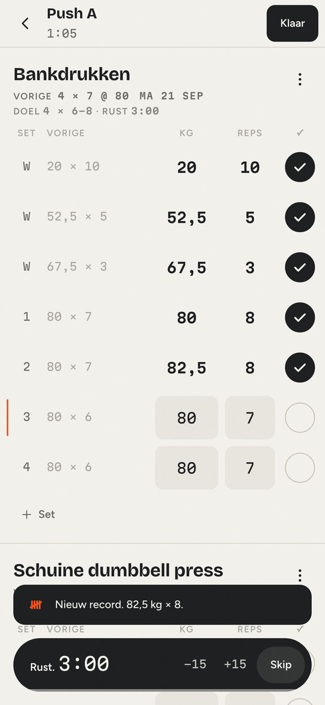
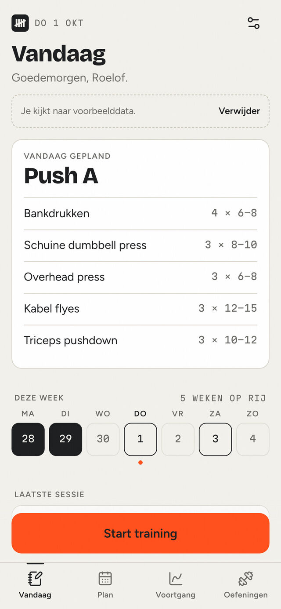
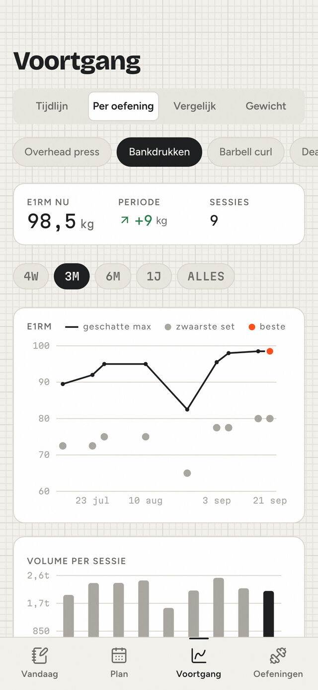
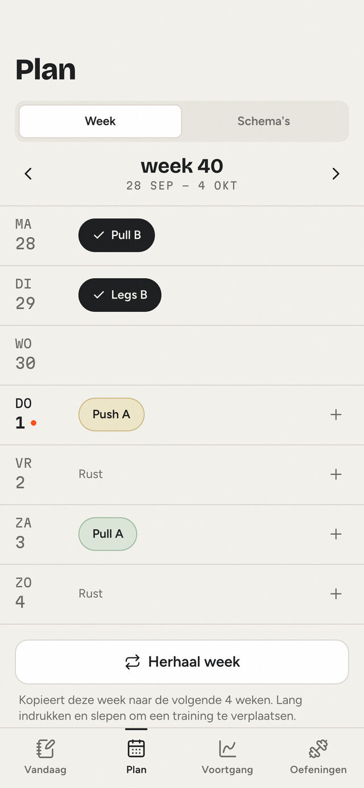
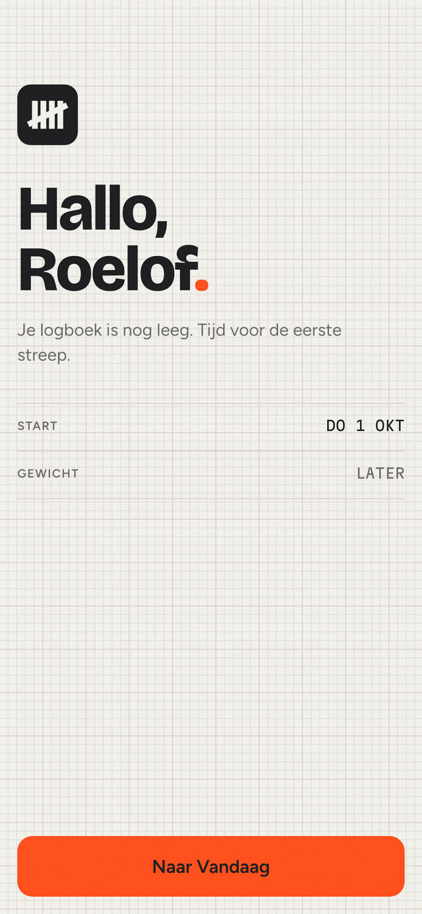
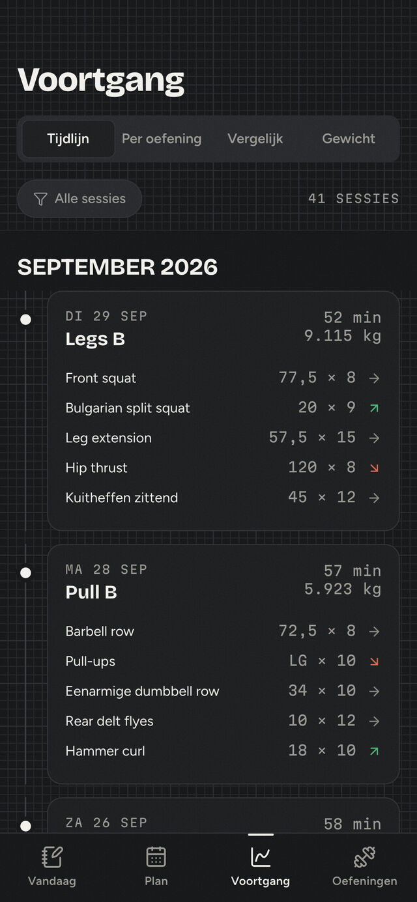

App Development · KRIJT
Een logboek voor krachttraining: je schrijft op wat je deed, ziet bij elke set wat je de vorige keer deed en gaat er net overheen. Het beeld erachter is het krijtbord in een oude gym. Alles staat op je eigen telefoon, zonder account, en werkt ook zonder bereik.
Installeren op Android
Gratis, voor Android 7 of nieuwer. Een nieuwe versie meldt KRIJT daarna zelf.

KRIJT is er voor wie drie tot vijf keer per week traint, een schema volgt en wil zien of hij sterker wordt. De app doet drie dingen: loggen tijdens de training, plannen per week en terugzien hoe het gaat.
Een app die opschrijft wat je deed en laat zien wat je de vorige keer deed, meer niet. Je kijkt wat er staat en je gaat er net overheen.
Alles werkt met één hand, de belangrijke knoppen zitten onder je duim en de cijfers zijn groot. Een eigen numpad en een voorstel in elk veld maken van een set vaak één tik.
Signaaloranje komt op hooguit één of twee plekken per scherm. Daarom telt een record alleen bij een nieuw zwaarste gewicht op een hoofdoefening, anders zegt oranje niets meer.
Geen account, geen sync, geen sociale feed en geen koppeling met Health. Twee vragen bij de start, allebei over te slaan. Online gaat de app alleen om te kijken of er een nieuwe versie is.
Echte schermen van versie 0.3.0, gevuld met de voorbeelddata die in de app zit.





Ook deze promo heb ik zelf gemaakt in After Effects, opgebouwd uit lagen van de echte app. Afvinken, de rusttimer, de recordmelding en de grafiek bewegen met de tijden en curves uit de code van KRIJT, op millimeterpapier zoals in de app zelf.
32 seconden in 9:16, voor Reels en TikTok. Van het turfteken tot de download, in de huisstijl van de app.